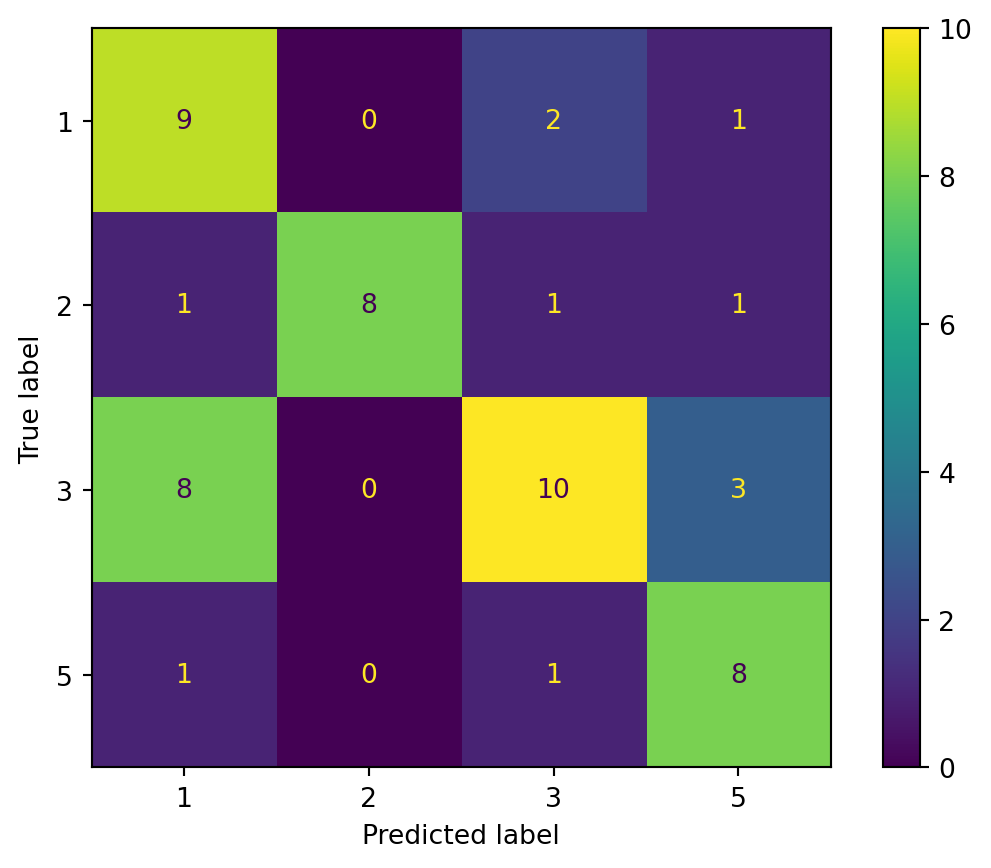
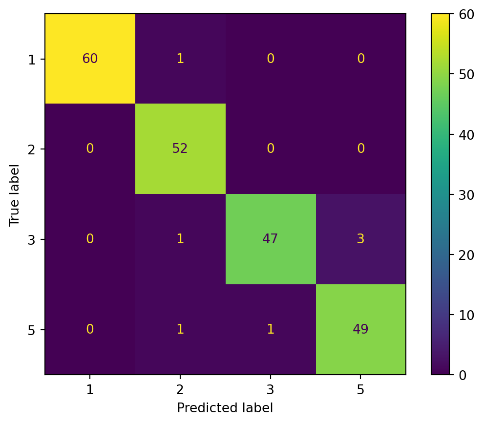

In this section, we are going to classify the data sets using the Naive Bayes classifier. The purpose of classification is to separate and organize data into relevant groups ('classes') based on their shared characteristics. In data science, a classifier is a type of machine learning algorithm used to assign a class label to a data input. An example is an image recognition classifier to label an image (e.g., 'car', 'truck', or 'person'). Classifier algorithms are trained using labeled data; in the image recognition example, for instance, the classifier receives training data that label images. After sufficient training, the classifier then can receive unlabeled images as inputs and will output classification labels for each image.
There are many algorithms for data classification, naive Bayes classifier belongs to a family of simple 'probabilistic classifiers' based on applying Bayes' theorem with strong (naive) independence assumptions between the features. Before we dive into the algorithm itself, I want to review the Bayes theorem a bit with you. Bayes' Theorem is a simple mathematical formula used for calculating conditional probabilities which is a measure of the probability of an event occurring given that another event has occurred. Applying Bayes' Theorem to the classification of the data, the output will be the likelihood of an outcome to happen given specific features (input).
Code
#LOAD RELEVANT PACKAGESfrom sklearn.datasets import load_irisimport numpy as npimport matplotlib.pyplot as pltimport seaborn as snsimport pandas as pdfrom sklearn.model_selection import train_test_splitfrom sklearn.metrics import plot_confusion_matrix
Read in the Data
Before applying classification on the data using Naive Bayes, it is very essential to prepare our text data in the form of a matrix where each row represents a tweet and each column represents a word. The value in the matrix will then be the number of occurrences of the corresponding word. This process of converting each text to a long vector is called vectorization, and we have performed this in the data cleaning step and created a vectorized csv file here. Also in the data cleaning step, I created another word frequency data frame which returns the frequency of all words in the texts in a descending order. The purpose of creating the word frequency data frame is to subsetting the vectorized text data by the top-referenced words. The threshold I chose for 'top referenced' is 170, which is smaller than the total rows of texts.
I gathered my text data from Twitter API, and the search words I used were five popular health insurance companies: Aetna, Anthem, Cigna, Humana, and UnitedHealth. Before merging these five separate text datasets into one big dataset, I manually assign them with labels to differentiate their belonging group. The labels that represent their topic of tweets would be the target of prediction. In other words, we are going to classify the data and train a model to predict the likelihood of a text belonging to a specific topic.
Code
df0 = pd.read_csv('/Users/liumingqian/anly-501-project-liumingqian0511/data/01-modified-data/vec.csv')wf = pd.read_csv('/Users/liumingqian/anly-501-project-liumingqian0511/data/01-modified-data/word_frequency_text.csv')df = df0[wf['word'][:170]]print(df.head(10))conditions = [ (df0['label'] =='Aetna'), (df0['label'] =='Anthem'), (df0['label'] =='Cigna'), (df0['label'] =='Humana'), (df0['label'] =='UnitedHealth') ]# create a list of the values we want to assign for each conditionvalues = [1,2,3,4,5]label = np.select(conditions, values)
u = np.mean(df,axis=0)sd =np.std(df, axis =0) for i inrange(100): df.iloc[:,i] = (df.iloc[:,i] - u[i])/sd[i]
Separating data into training and testing sets is an important part of evaluating data mining models. Typically, when you separate a data set into a training set and testing set, most of the data is used for training, and a smaller portion of the data is used for testing. The purpose of splitting the data into two sets is for validating the model that we train. After a model has been processed by using the training set, we test the model by making predictions against the test set. Because the data in the testing set already contains known values for the attribute that you want to predict, it is easy to determine whether the model's guesses are correct. If the model we fitted using training data can precisely predict the result of testing, then we can validate that the model is good. Using the sklearn.model_selection package, I split the data into x_train, x_test, y_train and y_test with the ratio 0.2 between the train and test. I am going to use x_train and y_train to train the model and apply it on x_test and y_test for validation.
Code
#INSERT CODE TO PARTITION DATASET INTO TRAINING-TESTX = df.to_numpy()Y = labeltest_ratio=0.2x_train, x_test, y_train, y_test = train_test_split(X, Y, test_size=test_ratio, random_state=0)#y_train=y_train.flatten()#y_test=y_test.flatten()print("x_train.shape :",x_train.shape)print("y_train.shape :",y_train.shape)print("X_test.shape :",x_test.shape)print("y_test.shape :",y_test.shape)
Still using the sklearn package, the outcome is printed below. The accuracy of 96% in the training set is considered very high, only 7 texts were mislabeled out of the total 215 texts in the training set. However, high accuracy in the training set is not enough to validate the model since the model itself is trained using this set. We can see from the result that the accuracy of the testing set drops to 65%. It is not a bad outcome considering we have 5 classes as the target. This number means that when we use the Gaussian Naive Bayes model that we trained from the training sets to predict the outcome of the testing set, the likelihood of the prediction being accurate is 65%.
To interpret the confusion matrix generated by using the sklearn package, we just need to focus on the diagonal of the matrix which represents the accurate cases when we successfully predicted the outcome. The more yellowish, the higher accuracy of the prediction is. As shown in the confusion matrix plots below, we can see that the diagonal of the confusion matrix in the training set is a lot brighter than in the testing set. But overall in both matrices, the diagonal is brighter than the other squares which means that there are a lot more accurate cases than inaccurate ones.
Code
from sklearn.naive_bayes import GaussianNBclf = GaussianNB()model = clf.fit(x_train, y_train)#INSERT CODE TO PRINT THE ACCURACY AND NUMBER OF MISLABELED POINTS FOR BOTH TRAINING AND TESTprint('ACCURACY CALCULATION')print('TRAINING SET:')print('Accuracy:', model.score(x_train,y_train))print('Number of mislabeled points out of a total 215 points = ',(y_train !=model.predict(x_train)).sum())print(' ')print('TEST SET:')print('Accuracy:', model.score(x_test,y_test))print('Number of mislabeled points out of a total 54 points = ',(y_test !=model.predict(x_test)).sum())print(' ')print('CHECK FIRST 20 PREDICTIONS')print('TRAINING SET:')print(y_train[0:20])print(model.predict(x_train)[0:20])print('ERROR', model.predict(x_train)[0:20]-y_train[0:20])print(' ')print('TEST SET:')print(y_test[0:20])print(model.predict(x_test)[0:20])print('ERROR', model.predict(x_test)[0:20]-y_test[0:20])
<sklearn.metrics._plot.confusion_matrix.ConfusionMatrixDisplay at 0x7fbdb49eda20>


Source Code
---jupyter: python3title: "Naive Bayes with Text Data"date: "11/29/2022"pdf-engine: lualatexformat: html: theme : Minty toc: true code-tools: true code-fold: true code-summary: "Code" toc-title: Contentsexecute: warning: false---### IntroductionIn this section, we are going to classify the data sets using the Naive Bayes classifier. The purpose of classification is to separate and organize data into relevant groups (“classes”) based on their shared characteristics. In data science, a classifier is a type of machine learning algorithm used to assign a class label to a data input. An example is an image recognition classifier to label an image (e.g., “car,” “truck,” or “person”). Classifier algorithms are trained using labeled data; in the image recognition example, for instance, the classifier receives training data that label images. After sufficient training, the classifier then can receive unlabeled images as inputs and will output classification labels for each image.There are many algorithms for data classification, naive Bayes classifier belongs to a family of simple "probabilistic classifiers" based on applying Bayes' theorem with strong (naive) independence assumptions between the features. Before we dive into the algorithm itself, I want to review the Bayes theorem a bit with you. Bayes' Theorem is a simple mathematical formula used for calculating conditional probabilities which is a measure of the probability of an event occurring given that another event has occurred. Applying Bayes' Theorem to the classification of the data, the output will be the likelihood of an outcome to happen given specific features (input).```{python}#LOAD RELEVANT PACKAGESfrom sklearn.datasets import load_irisimport numpy as npimport matplotlib.pyplot as pltimport seaborn as snsimport pandas as pdfrom sklearn.model_selection import train_test_splitfrom sklearn.metrics import plot_confusion_matrix```### Read in the DataBefore applying classification on the data using Naive Bayes, it is very essential to prepare our text data in the form of a matrix where each row represents a tweet and each column represents a word. The value in the matrix will then be the number of occurrences of the corresponding word. This process of converting each text to a long vector is called vectorization, and we have performed this in the data cleaning step and created a vectorized csv file [here](https://github.com/anly501/anly-501-project-liumingqian0511/tree/main/data/01-modified-data). Also in the data cleaning step, I created another word frequency data frame which returns the frequency of all words in the texts in a descending order. The purpose of creating the word frequency data frame is to subsetting the vectorized text data by the top-referenced words. The threshold I chose for 'top referenced' is 170, which is smaller than the total rows of texts.I gathered my text data from Twitter API, and the search words I used were five popular health insurance companies: Aetna, Anthem, Cigna, Humana, and UnitedHealth. Before merging these five separate text datasets into one big dataset, I manually assign them with labels to differentiate their belonging group. The labels that represent their topic of tweets would be the target of prediction. In other words, we are going to classify the data and train a model to predict the likelihood of a text belonging to a specific topic.```{python}df0 = pd.read_csv('/Users/liumingqian/anly-501-project-liumingqian0511/data/01-modified-data/vec.csv')wf = pd.read_csv('/Users/liumingqian/anly-501-project-liumingqian0511/data/01-modified-data/word_frequency_text.csv')df = df0[wf['word'][:170]]print(df.head(10))conditions = [ (df0['label'] =='Aetna'), (df0['label'] =='Anthem'), (df0['label'] =='Cigna'), (df0['label'] =='Humana'), (df0['label'] =='UnitedHealth') ]# create a list of the values we want to assign for each conditionvalues = [1,2,3,4,5]label = np.select(conditions, values)``````{python}u = np.mean(df,axis=0)sd =np.std(df, axis =0) for i inrange(100): df.iloc[:,i] = (df.iloc[:,i] - u[i])/sd[i]```Separating data into training and testing sets is an important part of evaluating data mining models. Typically, when you separate a data set into a training set and testing set, most of the data is used for training, and a smaller portion of the data is used for testing. The purpose of splitting the data into two sets is for validating the model that we train. After a model has been processed by using the training set, we test the model by making predictions against the test set. Because the data in the testing set already contains known values for the attribute that you want to predict, it is easy to determine whether the model's guesses are correct. If the model we fitted using training data can precisely predict the result of testing, then we can validate that the model is good. Using the **sklearn.model_selection** package, I split the data into x_train, x_test, y_train and y_test with the ratio 0.2 between the train and test. I am going to use x_train and y_train to train the model and apply it on x_test and y_test for validation.```{python}#INSERT CODE TO PARTITION DATASET INTO TRAINING-TESTX = df.to_numpy()Y = labeltest_ratio=0.2x_train, x_test, y_train, y_test = train_test_split(X, Y, test_size=test_ratio, random_state=0)#y_train=y_train.flatten()#y_test=y_test.flatten()print("x_train.shape :",x_train.shape)print("y_train.shape :",y_train.shape)print("X_test.shape :",x_test.shape)print("y_test.shape :",y_test.shape)```### Training and TestingStill using the sklearn package, the outcome is printed below. The accuracy of 96% in the training set is considered very high, only 7 texts were mislabeled out of the total 215 texts in the training set. However, high accuracy in the training set is not enough to validate the model since the model itself is trained using this set. We can see from the result that the accuracy of the testing set drops to 65%. It is not a bad outcome considering we have 5 classes as the target. This number means that when we use the Gaussian Naive Bayes model that we trained from the training sets to predict the outcome of the testing set, the likelihood of the prediction being accurate is 65%.To interpret the confusion matrix generated by using the sklearn package, we just need to focus on the diagonal of the matrix which represents the accurate cases when we successfully predicted the outcome. The more yellowish, the higher accuracy of the prediction is. As shown in the confusion matrix plots below, we can see that the diagonal of the confusion matrix in the training set is a lot brighter than in the testing set. But overall in both matrices, the diagonal is brighter than the other squares which means that there are a lot more accurate cases than inaccurate ones.```{python}from sklearn.naive_bayes import GaussianNBclf = GaussianNB()model = clf.fit(x_train, y_train)#INSERT CODE TO PRINT THE ACCURACY AND NUMBER OF MISLABELED POINTS FOR BOTH TRAINING AND TESTprint('ACCURACY CALCULATION')print('TRAINING SET:')print('Accuracy:', model.score(x_train,y_train))print('Number of mislabeled points out of a total 215 points = ',(y_train !=model.predict(x_train)).sum())print(' ')print('TEST SET:')print('Accuracy:', model.score(x_test,y_test))print('Number of mislabeled points out of a total 54 points = ',(y_test !=model.predict(x_test)).sum())print(' ')print('CHECK FIRST 20 PREDICTIONS')print('TRAINING SET:')print(y_train[0:20])print(model.predict(x_train)[0:20])print('ERROR', model.predict(x_train)[0:20]-y_train[0:20])print(' ')print('TEST SET:')print(y_test[0:20])print(model.predict(x_test)[0:20])print('ERROR', model.predict(x_test)[0:20]-y_test[0:20])``````{python}plot_confusion_matrix(clf, x_test, y_test)plot_confusion_matrix(clf, x_train, y_train)```